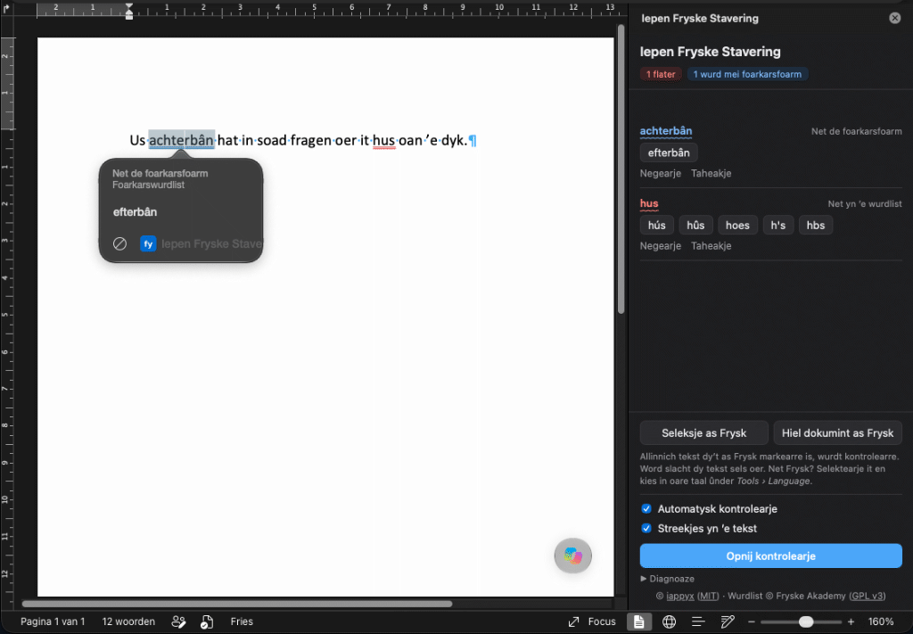

Iepen Fryske Stavering
Frisian spell checking for Microsoft Word, including Word for Mac. Free, using the official word list (Foarkarswurdlist).

Install it in Word for Mac
It takes about two minutes. You only do this once.
-
Download the add-in file
Download iepen-fryske-stavering.xmlA small settings file that tells Word where to find the spell checker.
-
Open Word’s add-in folder
In Finder, press ⇧ ⌘ G, paste this location and press Return:
~/Library/Containers/com.microsoft.Word/Data/DocumentsIf the folder can’t be found, open and quit Word once, then try again.
-
Put the file in a folder called “wef”
Create a new folder there named wef (File → New Folder), unless it already exists, and drag the downloaded file into it.
-
Restart Word
Quit Word completely with ⌘ Q and open it again. Click Iepen Fryske Stavering on the Home tab. Don’t see the button? Click Add-ins on the Home tab and choose it from the list. In older Word versions it’s under Insert → My Add-ins.
Using it
The panel on the right checks your document when it opens and again whenever you pause typing.
First, mark your Frisian text. The add-in only checks text that is marked as Frisian. Select it and click Seleksje as Frysk in the panel, or Hiel dokumint as Frysk for everything. Word then stops checking that text with Dutch or English, so only the Frisian squiggles are left. Text you type in a Frisian paragraph stays Frisian.
In the text
Marked words get a red or blue squiggle. Click one for up to three suggestions, and pick one to replace the word.
In the panel
Every issue with suggestions. Negearje ignores a word for now; Taheakje adds it to your own list for good.
Other languages
Dutch or English text is left to Word’s own spell check. Marked something as Frisian by mistake? Select it, choose Tools → Language and pick the right language.
Your text stays private
Checking happens inside Word on your own computer. Nothing you write is sent anywhere.
The squiggles in the text need Word 16.85 or newer with a Microsoft 365 subscription. Other versions show the panel only. Want to try the checker first? Test it in your browser.
Word on the web and Windows
Word on the web: go to Home → Add-ins → More Add-ins → My Add-ins, choose Upload My Add-in and select the downloaded file. The menu names can differ slightly between versions.
Word for Windows has no Frisian spell checker from Microsoft either. The add-in works there too, but Windows has no simple add-in folder like the Mac.
Advanced: if you’re comfortable with PowerShell, a script installs it for you, with no administrator rights needed. It’s in the tools folder on GitHub; the instructions explain how to run and remove it.
Removing it
Delete iepen-fryske-stavering.xml from the wef folder (step 2) and restart Word.